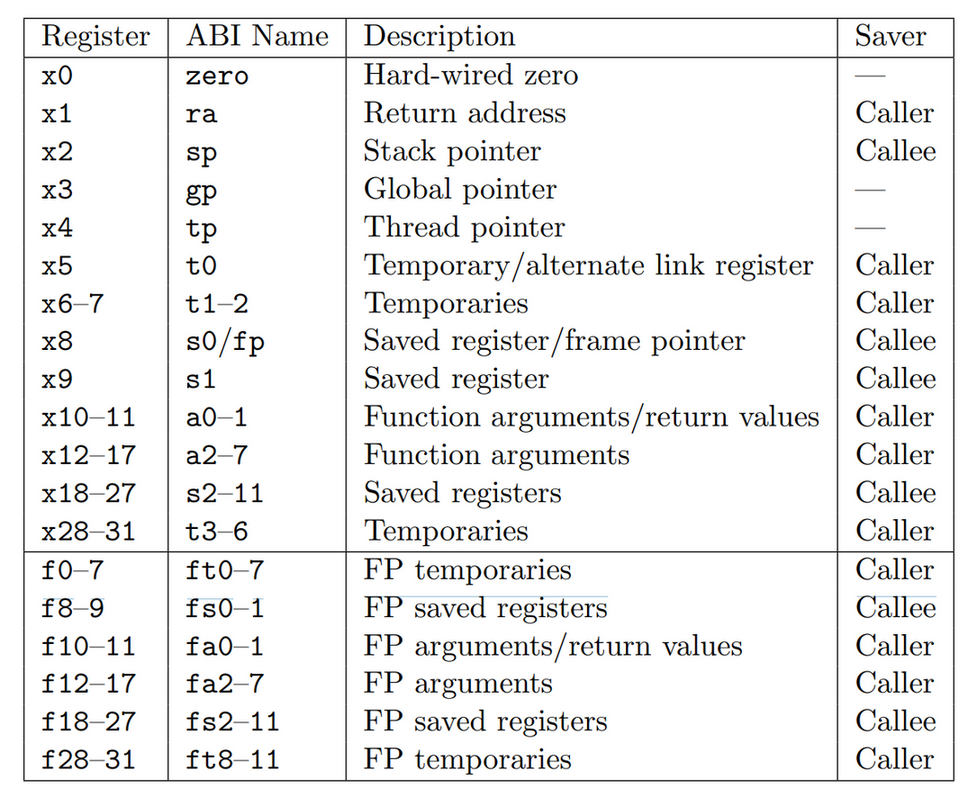

RISC-V Tutorial
Table of Contents
1. RISC-V Tutorial
https://riscv.org/technical/specifications/
1.1. Setup Environment
1.1.1. Install Toolchain
gcc:
$> sudo apt install gcc-riscv64-linux-gnu $> sudo apt install qemu-user $> sudo ln -s /usr/riscv64-linux-gnu/lib/ld-linux-riscv64-lp64d.so.1 /lib
build llvm:
$> mkdir build && cd build $> cmake -G Ninja ../llvm/ -DLLVM_DEFAULT_TARGET_TRIPLE="riscv64-unknown-elf" \ -DLLVM_EXPERIMENTAL_TARGETS_TO_BUILD="RISCV" -DLLVM_ENABLE_LLD=True \ -DLLVM_ENABLE_PROJECTS=clang -DCMAKE_INSTALL_PREFIX=/opt/riscv-llvm \ -DCMAKE_BUILD_TYPE=release
其中 LLVM_DEFAULT_TARGET_TRIPLE 需要与本地安装的 gcc toolchain 的 triple 一致. 这里编译 clang 时并没有编译 clang 的 libc 和 libcompiler-rt, 后续会需要用到 gcc toolchain 带的 libc, libgcc, startsfile 以及 ld 完成链接.
1.1.2. Build & Run
1.1.2.1. C
gcc:
$> riscv64-linux-gnu-gcc test.c -Wl,-rpath,/usr/riscv64-linux-gnu/lib/ $> ./a.out hello
llvm:
$> /opt/riscv-llvm/bin/clang main.c -march=rv64g \ --sysroot=/opt/riscv-rvv/riscv64-unknown-elf/ --gcc-toolchain=/opt/riscv-rvv/
`–sysroot` 参数和 `–gcc-toolchain` 参数是为了使用 riscv gcc toolchain 的 sysroot 和 ld
1.1.2.2. ASM
1.1.2.2.1. nostdlib
1: ## riscv64-linux-gnu-gcc ./test.s -nostdlib -static 2: ## or riscv64-linux-gnu-as ./test.s -o test.o && riscv64-linux-gnu-ld ./test.o -o ./a.out 3: 4: .global _start 5: 6: _start: 7: addi a0, x0, 1 8: la a1, helloworld 9: addi a2, x0, 13 10: ## 因为是用 qemu + linux 来执行, 所以这里使用的是 linux 的 syscall num 11: ## 64 是 write, 93 是 exit 12: addi a7, x0, 64 13: ecall 14: 15: addi a0, x0, 0 16: addi a7, x0, 93 17: ecall 18: 19: .data 20: helloworld: .ascii "Hello World!\n" 21:
Hello World!
1.1.2.2.2. stdlib
## riscv64-linux-gnu-gcc test.s -static .global main main: addi sp, sp, -4 sw ra, 4(sp) la a0, helloworld li a1, 10 jal printf li a0, 0 lw ra, 4(sp) addi sp, sp, 4 jr ra .data helloworld: .ascii "Hello World: %d!\n"
Hello World: 10!
1.1.2.3. Debug with QEMU GDB Server
$> qemu-riscv64 -g 12345 ./a.out ;; in another shell $> gdb-multiarch ./a.out (gdb) target remote localhost 12345 Remote debugging using localhost:12345 _start () at test.s:7 7 addi a0, x0, 1
or use a simple wrapper script:
#!/bin/bash if [[ $# == 0 ]]; then echo "usage qemu-gdb.sh <exec>" exit 1 fi app=$1 cat >/tmp/gdb.cmds <<hello target remote localhost:12345 hello qemu-riscv64 -g 12345 ./a.out & qemu_pid=$! gdb-multiarch $app -x /tmp/gdb.cmds kill -9 $qemu_pid &>/dev/null
1.1.2.4. Debug with Spike
1.2. RISC-V Assembly
1.2.1. Overview
RSIC-V ISA 由一个基础指令集 RV32I 和一系列的扩展指令集组成:
- RV32I 针对整数操作的 ISA, 47 条指令
- RV32M 乘法和除法, 8 条
- RV32F 单精度浮点数, 32 条
- RV32D 双精度浮点数, 32 条
- RV32A 原子操作, 11 条
以上所有加起来称为 RV32G, 除此以外, 还有额外两个扩展:
- RV32C 指令压缩
- RV32V 向量操作
1.2.2. Register
RV32I 共定义了 32 个寄存器, 寄存器宽度为 32, 用 XLEN 表示

其中:
- zero 始终为 0, 可以用来实现一些其它指令, 例如 addi t0, zero, 0x1 相当于给 t0 赋值为 1
- ra 是 return address, 函数返回时默认返回地址在 ra, 通过 jalr zero, 0(ra) 返回
- tp 是 thread pointer, 用来实现 Thread Local Storage
- gp 是 global pointer
- a0…a7 做为函数参数, 同时 a0…a1 做为函数返回值
- t0…t6 是 caller saved 通用寄存器
- s1…s11 是 callee saved 通用寄存器
- fp 是 frame pointer, 主要和 Backtrace 有关
- sp
1.2.3. RV32I
1.2.3.1. Overview
RV32I 共 47 条指令, 长度均为 32bit, 分为 6 种格式:

操作码 (operator):
- opcode, 类似的指令有相同的 opcode, 例如:
- I 指令中的 load 指令 opcode 都是 b11
- I 指令中的算术运算都是 b10011
- R 指令都是 b110011
- S 指令都是 b100011, B 指令都是 b1100111
- U 指令为 b110111, J 指令为 b1101111
- funct3, funct7 是对 opcode 的补充, 例如所有的 load 指令的 opcode 都是 b11, 通过 func3 来区分 lb, lh, lw …
操作数 (operand):
- rd 目标寄存器
- rs1 源寄存器 1
- rs2 源寄存器 2
- imm 立即数
其中 U,J 类型需要支持两个操作数, R,I,S,B 支持三个操作数.
I, intermediate
I 指令需要三个操作数: rd, rs1, imm
I 指令包含 imm 和 load 两种操作, 因为两者的用法类似:
- imm: rd(dest), rs1(op1), imm (op2)
- load: rd(dest), rs1(base), imm(offset)
addi:
12 5 3 5 7 ------------------------------ imm[11:0] rs1 000 rd 0010011 ------------------------------ op1 op2 dest
lw:
imm[11:0] rs1 010 rd 0000011 ------------------------------------- offset base dest
R, register-register
R 指令需要三个操作数: rd(dest), rs1(op1), rs2(op2)
以 add 为例:
7 5 5 3 5 7 ------------------------------ 0000000 rs2 rs1 000 rd 0110011 ------------------------------ op1 op2 destS, store
S 指令需要 3 个操作数: rs1(src), rs2(base), imm(offset)
以 sw 为例:
7 5 5 3 5 7 --------------------------------------------- imm[11:5] rs2 rs1 010 imm[4:0] 0100011 --------------------------------------------- offset[11:5] src base offset[4:0]
B, branch
B 指令和 S 格式基本相同, 只是 imm 部分 bit 分配有些不同.
rs1 (op1), rs2 (op2), imm (offset)
以 blt 为例:
imm[12|10:5] rs2 rs1 100 imm[4:1|11] 1100011
imm 使用的是 imm[12:1], 因为 risc-v 指令最短是 16 bit (RV32C), 所以 offset 是 2 字节对齐的, 即 imm[0] 必定为 0, 使用 imm[12:1] 可以使 branch 范围变为 (-4k,+4k)+pc.
`+pc` 是指 pc-relative, B/J 指令都是 pc-relative 的, 它的操作数中的 imm 是跳转目标相对当前 pc 的偏移量.
如果 B 指令要跳转的范围大于 8k 小于 2M, 可以使用 jal:
## before beq s1, s2, L1 ## after bne s1, s2, L2 jal zero, L1
如果跳转范围大于 2M, 则需要换成 jalr:
1: auipc a0, %pcrel_hi(L1) addi a0, a0, %pcrel_lo(1b) bne s1, s2, L2 jalr zero, 0(a0)
U, upper intermediate
U 有两个操作数 rd (dest), imm, 加载 imm 到 rd 的高 20 bit
lui:
imm[31:12] rd 0110111
J, jump
J 指令与 U 指令格式基本相同
jal:
imm[20|10:1|11|19:12] rd 1101111
与 B 指令类似, 没有使用 imm[0], J 跳转范围扩大为 [-1M, +1M]+pc (jal relocation)
1.2.3.2. Sample
1.2.3.2.1. I-Type Instructions
I 类型指令都是 `xxx rd, rs1, imm` 的形式, 其中 imm 12 bit, 包含以下指令:
- addi
- slti, sltiu
- andi, ori, xori
- slli, srli, srai
- lw, lh, lb
- lhu, lbu
- jalr
## riscv64-linux-gnu-gcc test.s -static .global main main: addi sp, sp, -4 sw ra, 4(sp) ## ------ addi (add imm) ------ la a0, addi_msg ## i 指令的 imm 是 12 bit, 范围是 -2048, 2047, 超过会编译不过 ## a1 = zero + (-2048) addi a1, zero, -2048 jal printf ## ------ slti (set less than imm), sltiu (set less than imm unsigned) ------ la a0, slti_msg li t0, 1023 ## 当 t0 < 1024 时, a1 = 1, 否则 a1 = 0 slti a1, t0, 1024 jal printf la a0, slti_msg li t0, 1024 slti a1, t0, 1024 jal printf la a0, sltiu_msg li t0, -1 ## 当 (unsiged)t0 < (unsigned)1024 时, a1 = 1, 否则 a1 = 0 sltiu a1, t0, 1024 jal printf ## ------ andi, ori, xori ------ la a0, and_or_xor_msg li t0, 0x11 andi a1, t0, 0x01 ori a2, t0, 0x01 xori a3, t0, 0x01 jal printf ## ------ slli (shift left logical imm) ------ ## ------ srli (shift right logical imm) ------ ## ------ srai (shift right arithmetic imm) ------ la a0, shift_msg li t0, 0x11 slli a1, t0, 4 srli a2, t0, 4 li t0, -0x11 srli a3, t0, 4 srai a4, t0, 4 jal printf ## ------ load: lw, lh, lb ------ la a0, load_msg la t0, load_data lw a1, 0(t0) lh a2, 4(t0) lb a3, 6(t0) lb a4, 7(t0) ## load 指令会先通过符号扩展 (sign extention) 把数据变成 XLEN 位, 再写入寄存器 ## lw, lh, lb 会对数据进行有符号扩展 (高位复制符号位) ## lwu, lhu, lbu 会对数据进行无符号扩展 (高位置 0) lbu a5, 7(t0) jal ra, printf ## ------ jalr ------ call jalr_test ## return li a0, 0 lw ra, 4(sp) addi sp, sp, 4 jr ra jalr_test: ## jalr rd, imm(rs1), 相当于 rd=pc+4; pc=imm(rs1) ## jalr 可以用来从函数中返回 ## 另外, J 和 B 指令跳转时都是 pc relative 跳转. 通过 I 指令的 jalr ## 可以实现整个地址空间范围的跳转 ## jalr 的典型应用是 procedure return 和针对 ## `switch ... case` 的 branch table jalr zero, 0(ra) .data addi_msg: .asciz "addi: %d\n" slti_msg: .asciz "slti: %d\n" sltiu_msg: .asciz "sltiu: %d\n" and_or_xor_msg: .asciz "and_or_xor: 0x%x, 0x%x, 0x%x\n" shift_msg: .asciz "slli: 0x%x, srli: 0x%x, negative: srli: %lld srai: %lld\n" load_msg: .asciz "load: %d, %d, %d, %d, %d\n" load_data: .word 1 .half 2 .byte 3 .byte -4
addi: -2048 slti: 1 slti: 0 sltiu: 0 and_or_xor: 0x1, 0x11, 0x10 slli: 0x110, srli: 0x1, negative: srli: 1152921504606846974 srai: -2 load: 1, 2, 3, -4, 252
1.2.3.2.2. R-Type Instructions
R 类型指令格式为 `xxx rd, rs1, rs2`, 与 I 类型指令有许多类似, 包含以下指令:
- add, sub
- slt, sltu
- and, or, xor
- sll, srl, sra
## riscv64-linux-gnu-gcc test.s -static .global main .text main: addi sp, sp, -4 sw ra, 4(sp) ## ------ addi (add imm) ------ la a0, sub_msg li a1, 10 sub a1, zero, a1 jal printf ## ------ slt (set less than imm), sltu (set less than imm unsigned) ------ la a0, slt_msg li t0, 1023 li t1, 1024 slt a1, t0, t1 jal printf ## ------ and, or, xor ------ la a0, and_or_xor_msg li t0, 0x11 li t1, 0x01 and a1, t0, t1 or a2, t0, t1 xor a3, t0, t1 jal printf ## ------ sll (shift left logical imm) ------ ## ------ srl (shift right logical imm) ------ ## ------ sra (shift right arithmetic imm) ------ la a0, shift_msg li t0, 0x11 li t1, 4 sll a1, t0, t1 srl a2, t0, t1 li t0, -0x11 srl a3, t0, t1 sra a4, t0, t1 jal printf ## return li a0, 0 lw ra, 4(sp) addi sp, sp, 4 jr ra .data sub_msg: .asciz "sub: %d\n" slt_msg: .asciz "slt: %d\n" and_or_xor_msg: .asciz "and_or_xor: 0x%x, 0x%x, 0x%x\n" shift_msg: .asciz "sll: 0x%x, srli: 0x%x, negative: srl: %lld srai: %lld\n"
sub: -10 slt: 1 and_or_xor: 0x1, 0x11, 0x10 sll: 0x110, srli: 0x1, negative: srl: 1152921504606846974 srai: -2
1.2.3.2.3. S-Type Instructions
S 指令用于 store, 格式为 `xxx rs1, (imm)rs2`, 表示把 rs1 的数据保存到 (imm)rs2的地址上. risc-v 的 load/store 只支持这一种寻址方式, 相当于 x86 的 `寄存器相对寻址 `, 这种寻址方式非常适合表示高级语言中 `data[i]` 这种形式的内存访问
risc-v 的 load/store 没有地址对齐的要求, 即 sw/lw 不需要 4 bytes 对齐
一共有三条指令:
- sw
- sh
- sb
## riscv64-linux-gnu-gcc test.s -static .global main .text main: addi sp, sp, -4 sw ra, 4(sp) la t0, test_data lw t1, 0(t0) addi t1, t1, 1 sw t1, 0(t0) la a0, test_msg lw a1, 0(t0) call printf ## return lw ra, 4(sp) addi sp, sp, 4 li a0, 0 jr ra .data test_data: .word 1 test_msg: .asciz "hello: %d\n"
hello: 2
1.2.3.2.4. B-Type Instructions
B 指令用于条件跳转, 它的格式与 S 指令基本相同, 只是 imm 的某些 bit 换了下位置, 格式为 `xxx rs1, rs2, imm`, 表示根据 rs1 的 rs2 比较的结果跳转到 pc+imm 的位置. 有以下几条指令:
- beq
- bne
- blt/bltu
- bge/bgeu
由于 imm encode 为 imm[12:1], 所以跳转的范围为 (-4k, +4k)
riscv 的 b 指令直接比较 rs1, rs2 并跳转, 而不是像 arm 那样拆分成两条指令: 第一条比较并设置 flag, 第二条根据 flag 跳转.
1.2.3.2.5. U-Type Instructions
U 指令用来操作一个 imm 的高位, 可以和其它指令配合来操作 32 位数, 有两条指令:
- lui (load upper imm)
- auipc (append upper imm to pc)
## riscv64-linux-gnu-gcc test.s -static .global main .text main: addi sp, sp, -4 sw ra, 4(sp) ## ------ lui ------ ## lui 加载一个 imm 到寄存器的高 20 位 ## 配合 addi 的 12 位 imm, 可以加载 32 位 imm la a0, lui_msg lui a1, 1<<16 addi a1, a1, 1 call printf ## 这里用 lui, addi 来加载 lui_msg 地址到 a0 ## 但与 la 伪指令效果并非完全相同, 因为通过 lui, addi 方式 ## 是对 lui_msg 的绝对地址寻址, 但 la 通常会使用 GOT 或 pc relative 寻址 lui a0, %hi(lui_msg) addi a0, a0, %lo(lui_msg) lui a1, 1<<16 addi a1, a1, 1 call printf ## ------ auipc ------ ## auipc rd, imm 相当于 rd=pc+(imm<<12), 配合 addi 可以得到相对于 pc 的 32 位地址 1: auipc a0, %pcrel_hi(auipc_msg) ## 这里是用的的 pcrel_lo (1b) 而不是 pcrel_lo(auipc_msg), 是 linker 认识的特殊写法. ## 因为 pcrel_lo 要计算 auipc_msg 低 12 位与 pc 低 12 位的差, 但 addi 时用的 pc 与 auipc ## 时的 pc 已经不同了, 理论上 addi 处的 pcrel_lo 应当使用上一条指令的 pc 来计算差值. ## 具体实现参考 linker_relocation 的 R_RISCV_PCREL_LO12 ## https://sourceware.org/binutils/docs/as/RISC_002dV_002dModifiers.html ## addi a0, a0, %pcrel_lo(1b) call printf lw ra, 4(sp) addi sp, sp, 4 li a0, 0 jr ra .data lui_msg: .asciz "lui: %x\n" auipc_msg: .asciz "auipc\n"
lui: 10000001 lui: 10000001 auipc
如果要加载一个 64 位的立即数, 可以有几种方法:
- 通过 load 指令
- 先加载高 32 位 (lui, addi) 到 x, 然后 x 左移 32 位, 最后加载低 32 位到 x, 但由于加载低 32 位到 x 会涉及到符号扩展的问题, 导致前面高 32 位被覆盖, 所以需要两个寄存器.
直接通过 li 伪指令
// li a0, 0x1234567812345678 lui a0,0x247 addw a0,a0,-1875 # 2468ad <main-0x7fdb9753> sll a0,a0,0xe add a0,a0,-1015 sll a0,a0,0xd add a0,a0,837 sll a0,a0,0xc add a0,a0,1656
li 的实现是一个递归的过程:
0x00111222333444=0x00111222333<<12+444 0x00111222333=0x00111222<<12+333 ...
之所以有时看到 sll 会超过 12 (0xc), 是因为一个优化:
由于 333 前面为 000, 可以一次 shift 24 位: 0x55111222000333=0x55111222<<24+333 而不是: 0x55111222000333=0x55111222000<<12+333
1.2.3.2.6. J-Type Instructions
J 指令和 U 指令格式类似, 只有一条 jal (jump and link) 指令, 可以支持 2M 范围的 pc 相对跳转
## riscv64-linux-gnu-gcc test.s -static .global main .text main: addi sp, sp, -4 sw ra, 4(sp) la a0, hello_msg jal ra, printf lw ra, 4(sp) addi sp, sp, 4 li a0, 0 jr ra .data hello_msg: .asciz "hello\n"
hello
1.2.4. Pseudo Instruction
伪指令是 assembler 提供的, 和 ISA 没有关系, 主要是为了方便使用, 尤其是涉及到符号重定位的操作, 例如 la, call 等.
| la rd, symbol | auipc rd, symbol[31:12]; addi rd, rd, symbol[11:0] |
| l{b,h,w,d} rd, symbol | auipc rd, symbol[31:12]; l{b,h,w,d} rd, symbol[11:0](rd) |
| s{b,h,w,d} rd, symbol, rt | auipc rt, symbol[31:12]; s{b,h,w,d} rd, symbol[11:0](rt) |
| fl{w,d} rd, symbol, rt | auipc rt, symbol[31:12]; fl{w,d} rd, symbol[11:0](rt) |
| fs{w,d} rd, symbol, rt | auipc rt, symbol[31:12]; fs{w,d} rd, symbol[11:0](rt) |
| nop | addi x0, x0, 0 |
| li rd, immediate | myriad sequences |
| mv rd, rs | addi rd, rs, 0 |
| not rd, rs | xori rd, rs, -1 |
| neg rd, rs | sub rd, x0, rs |
| negw rd, rs | subw rd, x0, rs |
| sext.b rd, rs | slli rd, rs, XLEN - 8; srai rd, rd, XLEN - 8 |
| sext.h rd, rs | slli rd, rs, XLEN - 16; srai rd, rd, XLEN - 16 |
| sext.w rd, rs | addiw rd, rs, 0 |
| zext.b rd, rs | andi rd, rs, 255 |
| zext.h rd, rs | slli rd, rs, XLEN - 16; srli rd, rd, XLEN - 16 |
| zext.w rd, rs | slli rd, rs, XLEN - 32; srli rd, rd, XLEN - 32 |
| seqz rd, rs | sltiu rd, rs, 1 |
| snez rd, rs | sltu rd, x0, rs |
| sltz rd, rs | slt rd, rs, x0 |
| sgtz rd, rs | slt rd, x0, rs |
| beqz rs, offset | beq rs, x0, offset |
| bnez rs, offset | bne rs, x0, offset |
| blez rs, offset | bge x0, rs, offset |
| bgez rs, offset | bge rs, x0, offset |
| bltz rs, offset | blt rs, x0, offset |
| bgtz rs, offset | blt x0, rs, offset |
| bgt rs, rt, offset | blt rt, rs, offset |
| ble rs, rt, offset | bge rt, rs, offset |
| bgtu rs, rt, offset | bltu rt, rs, offset |
| bleu rs, rt, offset | bgeu rt, rs, offset |
| j offset | jal x0, offset |
| jal offset | jal x1, offset |
| jr rs | jalr x0, rs, 0 |
| jalr rs | jalr x1, rs, 0 |
| ret | jalr x0, x1, 0 |
| call offset | auipc x6, offset[31:12]; jalr x1, x6, offset[11:0] |
| tail offset | auipc x6, offset[31:12]; jalr x0, x6, offset[11:0] |
| fence | fence iorw, iorw |
1.2.5. Demo
1.2.5.1. Bubble Sort
// 2022-02-25 19:31 #include <stdio.h> void bubble_sort(int *data, int start, int end) { for (int i = start; i < end; i++) { for (int j = i; j < end; j++) { if (data[j] < data[i]) { /* swap i, j */ int tmp = data[i]; data[i] = data[j]; data[j] = tmp; } } } } void dump(int *data, int len) { for (int i = 0; i < len; i++) { printf("%d ", data[i]); } printf("\n"); } int main(int argc, char *argv[]) { int data[] = {1, 1, 4, 3, 10, 5}; int len = sizeof(data) / sizeof(data[0]); dump(data, len); bubble_sort(data, 0, len); dump(data, len); return 0; }
1 1 4 3 10 5 1 1 3 4 5 10
## riscv64-linux-gnu-gcc test.s -static .global main .text dump: addi sp, sp, -4 sw ra, 4(sp) la s0, data la s1, data_end addi s0, s0, -8 .Lprint_loop: addi s0, s0, 8 beq s0, s1, .Lprint_end la a0, print_fmt ld a1, 0(s0) call printf j .Lprint_loop .Lprint_end: la a0, print_fmt_new_line call printf lw ra, 4(sp) addi sp, sp, 4 ret main: addi sp, sp, -4 sw ra, 4(sp) call dump la t0, data addi t0, t0, -8 la t2, data_end .Lmain_outer_loop: addi t0, t0, 8 beq t0, t2, .Lmain_end addi t1, t0, -8 .Lmain_inner_loop: addi t1, t1, 8 beq t1, t2, .Lmain_outer_loop ld s0, 0(t0) ld s1, 0(t1) blt s0, s1, .Lmain_continue ## swap sd s1, 0(t0) sd s0, 0(t1) .Lmain_continue: j .Lmain_inner_loop .Lmain_end: call dump lw ra, 4(sp) addi sp, sp, 4 move a0, zero ret .data data: .dword 1 .dword 1 .dword 4 .dword 3 .dword 10 .dword 5 data_end: print_fmt_new_line: .asciz "\n" print_fmt: .asciz "%ld "
1 1 4 3 10 5 1 1 3 4 5 10
1.2.5.2. Quick Sort
#include <stdio.h> void swap(int *data, int a, int b) { int temp = data[a]; data[a] = data[b]; data[b] = temp; } void quick_sort(int *data, int start, int end) { int pivort = start; int curr = start + 1; if (curr >= end) { return; } while (curr < end) { if (data[curr] < data[pivort]) { swap(data, curr, pivort + 1); swap(data, pivort, pivort + 1); pivort += 1; } curr += 1; } quick_sort(data, start, pivort); quick_sort(data, pivort + 1, end); } void dump (int* data, int len) { for (int i = 0; i < len; i++) { printf("%d ", data[i]); } printf("\n"); } int main(int argc, char *argv[]) { int data[] = {1, 1, 4, 3, 10, 5}; int len = sizeof(data) / sizeof(data[0]); dump(data, len); quick_sort(data, 0, len); dump(data, len); return 0; }
1 1 4 3 10 5 1 1 3 4 5 10
## riscv64-linux-gnu-gcc test.s -static .global main .text .macro enter addi sp, sp, -4 sw ra, 4(sp) .endm .macro leave lw ra, 4(sp) addi sp, sp, 4 move a0, zero ret .endm print_data: enter la s0, .Ldata_start la s1, .Ldata_end addi s0, s0, -8 .Lprint_loop: addi s0, s0, 8 beq s0, s1, .Lprint_end la a0, .Lprint_fmt ld a1, 0(s0) call printf j .Lprint_loop .Lprint_end: la a0, .Lprint_fmt_new_line call printf leave quick_sort: addi sp, sp, -64 sw ra, 8(sp) sw s0, 16(sp) sw s1, 24(sp) sw s2, 32(sp) sw s3, 40(sp) sw s4, 48(sp) sw s5, 56(sp) sw s6, 64(sp) ## gnu as 本身并不支持 define, 这里依赖 gcc 的 preprocessor ## 来处理 define, 所以需要用 gcc 编译而不能用 as ## #define end s6 #define start s0 #define loop s1 #define pivort s2 #define loop_v s3 #define pivort_v s4 #define tmp s5 move start, a0 move end, a1 move pivort, start addi loop, a0, 8 bge loop, end, .Lquick_sort_end addi loop, loop,-8 1: addi loop, loop, 8 bge loop, end, 1f ld loop_v, 0(loop) ld pivort_v, 0(pivort) bge loop_v, pivort_v, 1b ## swap ld tmp, 8(pivort) sd loop_v, 8(pivort) sd tmp, 0(loop) ## swap ld tmp, 8(pivort) sd pivort_v, 8(pivort) sd tmp, 0(pivort) ## inc pivort addi pivort, pivort, 8 j 1b 1: move a0, start move a1, pivort call quick_sort addi a0, pivort, 8 move a1, end call quick_sort .Lquick_sort_end: lw ra, 8(sp) lw s0, 16(sp) lw s1, 24(sp) lw s2, 32(sp) lw s3, 40(sp) lw s4, 48(sp) lw s5, 56(sp) lw s6, 64(sp) addi sp, sp, 64 ret main: enter call print_data la a0, .Ldata_start la a1, .Ldata_end call quick_sort call print_data leave .data .Ldata_start: .dword 4 .dword 3 .dword 10 .dword 5 .rep 2 .dword 3 .endr .fill 2, 8, 1 .space 8, 0xff .Ldata_end: .Lprint_fmt_new_line: .asciz "\n" .Lprint_fmt: .asciz "%ld "
4 3 10 5 3 3 1 1 -1 -1 1 1 3 3 3 4 5 10
1.3. GNU Assembler
1.3.1. label
- .L 开头的 label, 不会出现在符号表中
- 数字形式的 label 如 1:, 2: 是 local label, 它们可以重复定义, 通过 1b, 1f 的形式去引用当前位置后面或前面的 label. as 内部会让它们有唯一的名字
1.3.2. assembler directive
- `.lcomm test_data, 1024` 相当于 static char test_data[1024]={0}; `.comm test_data, 1024` 相当于 char test_data[1024]={0}, 即两者可以在 .bss 上分配空间, 但 .lcomm 产生 local 符号, .comm 产生 global 符号
- `.space 10, 1` 相当于连接 10 个 .byte 1
- `.fill 10, 8, 2 ` 相当于 10 个 .dword 2
.rep N, endr
.rept 3 .word 10 .endr 相当于 .word 10 .word 10 .word 10
- .word, .dword, .half, .byte, .float
- .ascii "hello", .asciz "hello"
- .global main
- .include "header.S"
- .macro, .endm
- .section
- .equ constant 0x1234
- align/balign
1.3.3. risc-v modifiers
https://sourceware.org/binutils/docs/as/RISC_002dV_002dModifiers.html
symbol 是一个 32 bit 地址, 并没有直接操作 32bit imm 的指令, 需要用 lui, auipc 去操作 symbol 的高 20 位,再用 addi 操作低 12 位, 所以需要 %hi, %lo 等 modifier. 这些 modifier 的作用实际上是设置目标文件中的 .rela section 的 relocation type, link editor 在链接时会根据这个 type 决定重定位时在什么位置写入什么数据
- %lo(symbol), %hi(symbol)
- %pcrel_hi(symbol), %pcrel_lo(label)
- %got_pcrel_hi(symbol)
需要注意的是 linker relocation 处理 lo/pcrel_lo, hi/pcrel_hi 时并不是简单的取高 20/低 12 位, 以 lui/addi 为例:
假设 symbol 真正地址为 0x10800, 考虑两种不同的方案:
- lui 使用的 high_part 为 0x10000, low_part 为 0x800
- lui 使用的 high_part 为 0x11000, low_part 为 -0x800
第一种是不可行的, 因为 addi 的 12 bit 为 sign extended, 范围为 [-0x800,0x800)
1.4. Standard Extention
1.4.1. RV32M
RV32M 有 8 条 R 指令:
mul, mulh, mulhu, mulhsu
mul 用来获得两个 32 bit 数乘法的低 32 bit
mulh (mul high) 用来获得两个 32 bit 数乘法的高 32 bit
mulhu (mul hight unsigned) 用来获得两个 unsigned 32 bit 数乘法的高 32 bit
mulhsu (mul hight signed unsigned) 用来获得一个 unsigned 32 bit 数和一个 signed 32 bit 数相乘的高 32 bit
div, divu, rem, remu
div 获得商, rem 获得余数, 这里的除法是整数除法
## riscv64-linux-gnu-gcc test.s -static .global main .text main: addi sp, sp, -8 sd ra, 8(sp) li t0, 3 li t1, 2 mul a1, t0, t1 div a2, t0, t1 rem a3, t0, t1 la a0, .Lprint_fmt call printf ld ra, 8(sp) addi sp, sp, 8 move a0, zero ret .Lprint_fmt: .asciz "%lx %lx %lx\n"
6 1 1
1.4.2. RV32F and RV32D
RV32{F,D} 是针对浮点数的指令, 浮点数的格式是 IEEE754
除了用于 load/store 的:
- flw (float load word)
- fsw (float store word)
- fld (float load double word)
- fsd (float store double word)
其它都是 R 指令, 且都通过 .{s,d} 后缀区别 single precision 和 double precision, 例如:
1.4.2.1. 算术运算
- fadd.{s,d}
- fsub.{s,d}
- fmul.{s,d}
- fdiv.{s,d}
- fsqrt.{s,d}
- fmin.{s,d}
- fmax.{s,d}
1.4.2.2. 比较运算
rv32f 没有提供 v32i 的 bne 类似条件跳转的指令, 但提供了浮点比较指令, 比较的结果放在 rd 中, 再使用 x 寄存器上的条件跳转指令进行跳转, 例如:
flt x5，f1，f2 bne x5，x0，exit
- feq.{s,d}
- flt.{s,d}
- fle.{s,d}
1.4.2.3. 浮点与定点互相搬运
f 寄存器与 x 寄存器互相复制
fmv.x.{w,d}
w 表示单精度, d 表示双精度
fmv.x.w a0, fa0
fmv.{w,d}.x
fmv.w.x fa0, a0
1.4.2.4. 寄存器
所有浮点操作使用独立的 f0~f31 寄存器, 和 rv32i 使用的 x 寄存器有类似的别名, 例如:
- ft0~ft11 是 caller saved temp register
- fs0~fs11 是 callee saved register
- fa0~fa7 用来保存 argument 和 return value, 同样是 caller saved
1.4.2.5. 调用约定
与 rv32i 类似, rv32{f,d} 也使用 fa0~fa7 传递参数, 例如, foo(int a, float b) 会使用 a0 读取 a, fa0 读取 b.
## riscv64-linux-gnu-gcc test.s -static .global main .text foo: addi sp,sp,-16 sd ra,8(sp) ## 这里是 gcc 生成的代码, 实际上可以用 fmv.x.d a2, fa0 代替 fsd/ld ## fmv.x.d a2, fa0 fsd fa0,16(sp) ld a2,16(sp) mv a1,a0 la a0,.Lprint_fmt call printf ld ra,8(sp) addi sp,sp,16 ret main: addi sp, sp, -8 sd ra, 8(sp) li a0, 0x1234 la t0, 1f fld fa0, 0(t0) call foo ld ra, 8(sp) addi sp, sp, 8 move a0, zero ret 1: .double 1.1 .Lprint_fmt: .asciz "%x %f\n"
1234 1.100000
关于 printf 这种 variadic function, 有特殊的处理: 使用 a0, a1, a2 … 而不使用 fa0, fa1, …, 需要调用者用 fmv.x.{w,d} 把浮点搬运到整数寄存器.
## riscv64-linux-gnu-gcc test.s -static .global main .text main: addi sp, sp, -8 sd ra, 8(sp) la a0, .Lprint_fmt li a1, 0x1234 la t0, 1f ## 直接做为整数 load ld a2, 0(t0) ## 或者使用 fmv.x.d 搬运一次 ## fld fa0, 0(t0) ## fmv.x.d a2, fa0 call printf ld ra, 8(sp) addi sp, sp, 8 move a0, zero ret 1: .double 1.1 .Lprint_fmt: .asciz "0x%x %f\n"
0x1234 1.100000
1.4.3. RV32A
RV32A 定义了原子操作 (atomic operation)
1.4.3.1. CAS
其它平台例如 x86 提供了 compare and swap (CAS) 类操作实现 read-modify-write 做为原子操作的原语, 以 cmpxchg 指令为例, 实现一个 atomic_inc 的代码大约是:
https://www.felixcloutier.com/x86/cmpxchg
## 这段代码实现的功能是 *mem += 1 la t2, mem lw t0, 0(t2) retry: addi t1, t0, 1 cmpxchg t0, t2, t1 beqz zf, retry
- load mem 到 t0
- t1=t0+1
- 比较 t0 和 mem 的值
- 若相等, 表示没有 race, 把 t1 写入 mem, 标志寄存器 zf 置位
- 若不相等, 表示有 race, 把 mem 写入 t0, 标志寄存器 zf 复位
所以 cmpxchg 共需要操作四个寄存器:
- cmp 的两个寄存器
- 要写入的新值的寄存器
- 标志寄存器
RV32A 没有提供 CAS, 因为它的指令无法编码 4 个寄存器, 做为替代, 它提供了 Atomic Memory Operation (AMO) 和 Load Reserved/Store Condition (LR/SC)
另外, AMO 和 LR/SC 都支持额外的 ordering 信息 (aq/rl), 可以做为 barrier 使用
Backlinks
Retargeting GCC To RISC-V (Retargeting GCC To RISC-V > newlib/glibc > atomic 相关): 例如 riscv 可以用 LR/SC 实现 libc 要求的 atomic_compare_and_exchange_bool_acq 做 CAS.
1.4.3.2. AMO
amo 是 R 指令, 包括: amo{add, and, or, swap, xor, max, maxu, min, minu}.w
amo 指令不像 cmpxchg 或 lr/sc 一样会失败.
lr/sc 会失败是因为它们需要先 read & update, 然后 write 时会有可能因为内存数据已经被其它 sc 修改导致 read & update 得到的结果无效, 从而导致失败.
amo 不需要 read, 因为它是直接在原数据基础上 update, 所以它不会失败. 但限制是它能做的 update 是预定好的: add, and, or, …, 想实现一个没有定义的 update 例如 `mem[x]=mem[x]*2` 是不可能的.
.global main .text main: addi sp, sp, -8 sd ra, 8(sp) ## amoadd.w 相当于 rd=offset(rs2), offset(rs2)=rs1+offset(rs2) la a0, print_fmt la t0, data li t2, 10 amoadd.w a1, t2, 0(t0) call printf ## amoswap 相当于 rd=offset(rs1); offset(rs1)=rs2 la a0, print_fmt la t0, data addi t2, zero, 1 amoswap.w a1, t2, 0(t0) call printf la a0, print_fmt la t0, data lw a1, 0(t0) call printf ld ra, 8(sp) addi sp, sp, 8 move a0, zero ret .data print_fmt: .asciz "%d\n" data: .word 10
10 20 1
使用 amoswap 实现的 spinlock:
## a0 地址为 1 时表示 locked, 为 0 表示 unlocked li t0, 1 1: amoswap.w.aq t1, t0, (a0) bnez t1, 1b ## acquired ## ... amoswap.w.rl zero, zero, (a0)
Backlinks
OpenMP (OpenMP > libgomp > sync > atomic): `omp atomic` 在 riscv 上实际对应的是 AMO 指令
Retargeting GCC To RISC-V (Retargeting GCC To RISC-V > newlib/glibc > atomic 相关): 另外, libc 会使用 CAS 实现 atomicmax, min, …, 但 riscv 可以提供自己的基于 AMO 的实现
1.4.3.3. LR/SC
LR/SC 成对出现, 且需要操作相同的地址, 有点类似于把 cmpxchg 拆成两条指令.
注意 SC 失败的原因是 LR 的地址被其它 SC 修改: SC 并不会关注普通的 store 指令导致的修改
.global main .text main: addi sp, sp, -8 sd ra, 8(sp) la t0, data ## 成对的 lr/sc 需要操作相同的地址 t0 ## 读取 t0 的旧数据 1: lr.w t2, 0(t0) ## 要写入 t0 的新数据 addi t2, t2, 10 ## 若 t0 中途被其它 sc 修改, 则不会写入新数据, 且 t3 会返回 0 ## 否则写入新数据, 且 t3 返回 1 sc.w t3, t2, 0(t0) bnez t3, 1b la a0, print_fmt lw a1, data call printf ld ra, 8(sp) addi sp, sp, 8 move a0, zero ret .data print_fmt: .asciz "%d\n" data: .word 10
20
使用 lr/sc 实现的 spinlock:
## lock 1: lr.w t0, (a0) bnez t0, 1b li t0, 1 sc.w t1, t0, (t0) bnez t1, 1b ## unlock 1: lr.w zero, (a0) sc.w t1, zero, (t0) bnez t1, 1b
spike 中 lr/sc 的实现:
- lr 时 mmu 会标记 RISCV_XLATE_LR 标记设置 `load_reservation_address = paddr`
- store_conditional 会检查 load_reservation_address 是否等于 paddr, 如果相等, sc 成功, load_reservation_address 设为 -1, 否则 sc 失败
所以在 spike 的实现里, 多个针对不同地址 lr/sc 无法并行.
Backlinks
Retargeting GCC To RISC-V (Retargeting GCC To RISC-V > newlib/glibc > atomic 相关): 例如 riscv 可以用 LR/SC 实现 libc 要求的 atomic_compare_and_exchange_bool_acq 做 CAS.
1.4.4. RV32C
RV32C 代表 compat, 即把一部分指指令替换为 16 bit 的形式, 之所以有些指令可以压缩, 是因为:
- 只是 10 个寄存器是经常访问的 (a0~a5, s0, s1, sp, ra), 所以不需要用 5 bit 来 encode 寄存器
- 有些指令的 rs, rd 是相同的, 例如 addi s0, s0, 1
- imm 有时很小, 不需要 12 bit 编码
C 指令命名为 c.xxx,
- c.mv rd, rs <=> addi rd, rs, 0
- c.addi rd, imm <=> addi rd, rd, imm
- c.ldsp ra, 8(sp) <=> ld ra, 8(sp)
- c.jr ra <=> jalr zero, 0(ra)
- …
as 在汇编阶段会将符合条件的指令替换成 C 指令 (除非通过编译器参数例如 `-march=rv64g` 禁用 RV32C). 为了能尽量利用 C 指令, 编译器会优先使用 C 指令能使用的那几个寄存器, 并且会通过一些优化尽量生成较小的 imm
1.4.5. RV32V
RV32V 定义了向量操作, 和 SIMD 不同的是, 它定义向量寄存器 v0, v1 …, 且通过setvl 指定要操作的向量的长度, 而不是像 SIMD 那样把长度嵌入在指令中.
目前 (2022/2) gcc 的 rivc-v 扩展还不支持 RV32V
1.4.6. RV64G
针对 64 bit 的扩展. RV32G 的指令可以直接在 RV64G 使用, 指令格式都没有变, 只是 XLEN 变成 64.
为了在 RV64G 中支持 32 bit 的计算, 提供了带 w 后缀的指令, 例如 `addiw a0,x0,1`, 它会把 32 bit 截断的结果写入 a0.
另外, RV64G 还添加了几个带 d 后缀的指令, 用来支持 double word
1.4.6.1. rv64i
- add{i}.w, sub{i}.w
- sll{i}.w, srl{i}.w, sra{i}.w
- ld (load double word), 加载 64 bit double word (和 lb, lh, lw 对应)
- lwu
1.4.6.2. rv64m
- mulw
- div{u}.w, rem{u}.w
1.4.6.3. rv64f/rv64d
- fmv.d.x, fmv.x.d
1.4.6.4. rv64c
- c.add{i}.w
1.4.6.5. rv64a
xxx.d 与 xxx.w 对应, 例如 amoadd.d
1.5. Privileged ISA
1.5.1. Overview
https://riscv.org/wp-content/uploads/2017/05/riscv-privileged-v1.10.pdf
https://danielmangum.com/posts/risc-v-bytes-privilege-levels/
RISC-V 主要有 M (machine), S (supervisor), U (user) 三种模式.
- M 是最基础的, 权限最高的模式, 适用于裸系统
- S 用来运行 OS
- U 用来运行应用程序
通过 ecall 和 {m,s}ret 指令可以在模式之间转换:
- mret
- M -> S
- jump to mepc (machine excepiton pc)
- sret
- S -> U
- jump to sepc (supervisor exception pc)
- ecall
- U -> S 或 S -> M
- jump to stvec (supervisor trap vector) (或 mtvec (machine trap vector))
通过 ecall 进入 S (或 M 模式) 前, sepc (或 mepc) 自动被设置为当前 pc, 然后跳转到 stvec (或 mtvec), 后者称为中断向量, stvec 执行完以后需要调用 sret (或 mret) 返回到之前模式, 同时更新 pc 为 sepc (或 mepc). 需要注意的是由于 ecall 保存的 sepc 为当前 pc (而不是 pc+4), 所以针对 ecall 的 stvec 里需要把 sepc+4 避免死循环.
低权限模式无法设置高权限模式的 vec, 所以提升权限后只能执行高权限预设的动作, 例如 syscall
前面提到的 mepc, sepc, stvec, mtvec 都是 CSR (control status register), Privileged ISA 给 CSR 预留了 12 bit 的命名空间 (普通的 x 寄存器只有 5 bit 命名空间)
1.5.2. Machine-Level CSRs
misa
Machine ISA, 用来读取硬件对 I, F, D, M, A, C, V…等扩展的支持情况
mvendorid
Machine Vendor ID
marchid
Machine Architecture ID
mimpid
Machine Implementation ID
mhartid
Hart ID, hardware thread ID, 相当于当前 core id
mstatus
Machine Status
- MIE, SIE, UIE 是 interrupt-enable bits
mtvec
Machine Trap-Vector Base-Address
medeleg
Machine Trap Delegation
mie
Machine Interrupt Enable
mtime
Machine Timer
mcycle, minstret, …
Hardware Performance Monitor
mcounteren
counter-enable register
mepc
Machine Exception Program Counter
mcause
Machine Cause Register
1.5.3. Supervisor-Level CSRs
- status
- stvec
- sie
- cycle,instret
- scounteren
- sepc
- scause
satp
Supervisor Address Translation and Protection
1.5.4. Sample
.section .text .global start ## 初始运行在 M 模式 start: ## 一般情况下 mepc 由 S 模式下的 ecall 设置, 这里直接设置了 ## mepc. la t0, supervisor csrw mepc, t0 ## 设置 mtvec 为 m_trap la t1, m_trap csrw mtvec, t1 li t2, 0x1800 csrc mstatus, t2 li t3, 0x800 csrs mstatus, t3 li t4, 0x100 ## 0x100 设置为 mdeleg 表示 ecall 被 delegate 给 S 模式 csrs medeleg, t4 ## mret 会降权为 M, 同时跳转到 mepc 即 supervisor mret m_trap: ## mepc 会自动被设置为后面 s_trap::ecall+4 的地址, 以便 ecall 能返回 csrr t0, mepc ## mcause 为 9, 表示 Environment call from S-mode csrr t1, mcause ## 这里手动设置 mepc 为 supervisor la t2, supervisor csrw mepc, t2 ## mret 降权为 S 并跳转到 supervisor mret supervisor: ## 设置 sepc 为 user la t0, user csrw sepc, t0 ## 设置 stvec 为 s_trap la t1, s_trap csrw stvec, t1 ## sret 会降权为 U 并跳转到 sepc 即 user sret s_trap: csrr t0, sepc ## scause 为 8, 表示 Environment call from U-mode csrr t1, scause ## ecall 提权到 M 并调用 mtvec 即 m_trap ecall user: csrr t0, instret ## ecall 会提权到 S 并调用 stvec 即 s_trap ecall
1.6. 其它
1.6.1. RISC-V vs. MIPS
risc-v 与 mips 有许多相同的地方, 实际上 riscv gnu toolchain 主要是在 mips 的基础上修改的.
riscv 与 mips 相似的地方:
- 指令长度都是 32 bits
- 都有 32 个通用寄存器, 都有 zero 寄存器
- 只能用 load/store 访存
- 都有 bnez/beqz
不同的地方:
主要一个不同的地方是 mips 的 branch 指令不能直接比较并跳转, 而是需要两条指令, 例如:
## riscv blt t1, t2, target ## mips slt $at, $t1, $t2 beqz $at, target
- riscv 没有 Delay Slot
- riscv word 不需要对齐
riscv 的 base ISA 是 little-endian (规范允许 big-endian 或 bi-endian, 但 instruction parcel 必须是 little-endian, 以便能快速解码出指令的长度) , mips 两种都支持. mips-gcc 通过 `-EB`, `-EL` 指定endian.
之前碰到过一个问题是 tflite 在 mips 上默认用 `-EB` 编译, x86 用 od 转换 binary model 为 c header 时默认使用 little-endian, 导致 tflite 启动时会进行一个 endian 转换,又因为 model 放在 .rodata, 所以程序会出错
1.6.2. Arithmetic Overflow
riscv 进行整数计算时不会进行 overflow check, 需要用户代码自己去检查, 例如:
add t0, t1, t2 ## 如果 t2 < 0, 则 t0 > t1 表示 overflow ## 如果 t2 > 0, 则 t0 < t1 表示 overflow slti t3, t2, 0 slt t4, t0, t1 bne t3, t4, overflow
riscv 进行浮点计算时会通过 fcsr 指示 overflow 和 underflow (underflow 是指浮点数过于接近 0 (例如 \(1.0*2^{-127}\)), 而 float 的 exponent 最小是 -126, 无法精确表示)
无论是整数运算还是浮点运算, riscv 都不会触发 overflow exception
1.6.3. 32-bit Program on 64-bit RISC-V
1.6.3.1. dynamic XLEN
64 位 RISC-V CPU 如果要支持 32 位程序, 需要支持动态 XLEN.
虽然 RISC-V 的指令编码和寄存器名称在 32 位和 64 位是相同的, 但在不同的 XLEN 时指令的行为却是不同的, 例如:
li x0, 0xffffffff li x1, 0x1 add x2, x0, x1 beqz x2, handler
当 XLEN=32 时, x2 为 0, beqz 成立. 当 XLEN=64 时, x2 不为 0, beqz 不成立.
为了上述 32 位程序能正确运行, 需要指定 XLEN = 32.
RISC-V spec 规定, 指定了 XLEN 后, 指令的源寄存器的数据只使用 XLEN 长度的部分, 目的寄存器的数据需要通过符号扩展为其最大长度
如果 CPU 支持 dynamic XLEN, 可以通过修改 misa 和 mstatus 的 MXL, SXL, UXL 来配置不同的 XLEN
1.6.3.2. linux compat syscall
32 位程序发起 syscall 时会使用 32 位的 syscall num, 64 位 linux 为了支持 32 位程序, 会针对 32 位 syscall 定义单独的 compat syscall table, 且这个 table 里的 wrapper 会把 32 位 syscall 的参数修改成 64 位 syscall 要求的样子, 然后再调用对应的 64 位 syscall.
假设以某个 32 位 syscall 有一个参数为 int64_t, 按约定, 这个参数会被放在两个 32位寄存器中, 其对应的 compat syscall wrapper 需要把这两个寄存器的值合并到一个寄存器中, 再调用 64 位的 syscall.
1.6.4. 其它 extension
1.6.5. sext
有些 RISC-V 指令只会写目的寄存器的一部分, 例如低 32 位, 寄存器中没有被写的部分需会通过隐式的 sext/zext 补上 0 或符号位, 而不是保留原来的数据. 例如:
lw a0, 0(a0) sext.w a0, a0 # <-- 这条指令并不需要, 因为 lw 会隐式的对 a0 做 sext addi a0, a0, 1
另外, `sext.w a0, a1` 实际是 `addiw a0, a1, 0` 的伪指令, 因为 `addiw a0, a1, 0` 隐含着对 a0 的符号扩展
具体可以分为以下几类:
load 数据的宽度小于 XLEN 时, 例如 rv64 的 lw
x[rd] = sext(M[x[rs1] + sext(offset)][31:0]) ~~~~- lw (rv64), lh, lb 会进行 sext
- lwu (rv64), lhu, lbu 会进行 zext
lui (rv64)
和 load 指令类似, 只不过要 load 的数据来自立即数
x[rd] = sext(immediate[31:12] << 12)
rv64 中的 xxxw 指令, 例如 addiw, slliw, mulw, …
x[rd] = sext((x[rs1] + sext(immediate))[31:0])
rv{32,64}{f,d} 中的 xxx.x.w, 例如 fmv.x.w
x[rd] = sext(f[rs1][31:0])